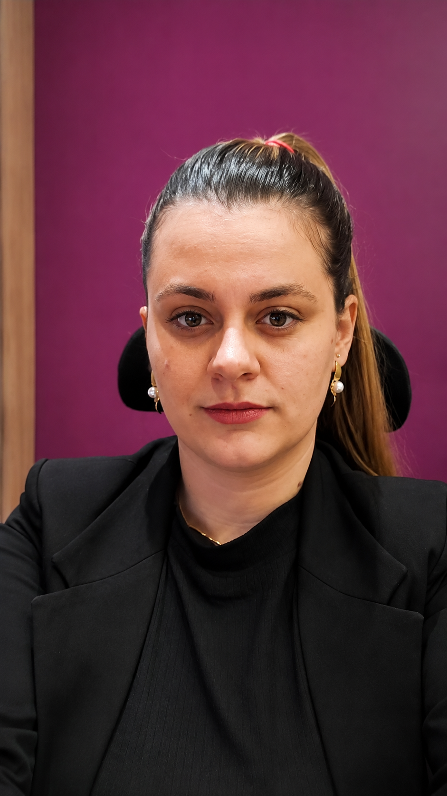

Jornalista · Especialista em Conteúdo Estratégico
Kelin Regina
Transformo informação em conteúdo e conteúdo em estratégia.
Produzo artigos, roteiros, páginas institucionais e narrativas que tornam assuntos complexos acessíveis, fortalecem marcas e criam conexões reais entre empresas e pessoas.
Produção Editorial
Storytelling
SEO Editorial
Conteúdo Técnico
Copywriting
Comunicação Corporativa
Roteiros
Pesquisa
IA aplicada ao conteúdo

Sobre
Quem transforma informação em experiência também transforma marcas.
Sou jornalista por formação e especialista em conteúdo estratégico por experiência. Minha trajetória foi construída produzindo artigos, roteiros, páginas institucionais, materiais corporativos e conteúdos técnicos para empresas dos setores industrial, agronegócio e financeiro.
Mais do que escrever, atuo pesquisando, estruturando, revisando e adaptando conteúdos para diferentes públicos, canais e idiomas, sempre buscando clareza, consistência e propósito.
Acredito que conteúdo bem construído fortalece marcas, gera confiança e aproxima pessoas.
Especialidades
Da pesquisa à publicação, conteúdo pensado para cada canal.
Produção Editorial
Blogs, artigos, ebooks e materiais ricos.
Roteirização
Reels, YouTube e vídeos institucionais.
Conteúdo para Redes Sociais
Instagram, Facebook e LinkedIn com coerência editorial.
Storytelling
Narrativas que aproximam pessoas e marcas.
SEO Editorial
Conteúdo otimizado sem perder naturalidade.
Conteúdo Técnico
Transformação de assuntos complexos em linguagem clara.
Comunicação Corporativa
Materiais internos, institucionais e executivos.
Revisão Editorial
Padronização textual e garantia de consistência.
Localização
Apoio à adaptação para inglês e espanhol.
IA aplicada ao conteúdo
Pesquisa, organização e criação com curadoria humana e qualidade editorial.
Seção exclusiva
Uma ideia, múltiplos formatos.
Uma pauta bem estruturada pode nascer como artigo, ganhar ritmo em vídeo, virar carrossel, chegar ao LinkedIn e sustentar uma página institucional.
Blog
Roteiro Reels
Roteiro YouTube
Carrossel Instagram
LinkedIn
Página institucional
Projetos editoriais
Comunicação clara para setores complexos.
Rotoline
Comunicação estratégica para uma indústria global
Atuação além do blog: produção de artigos técnicos, SEO, pesquisa, revisão de materiais, páginas do site, conteúdo para Service e TI, comunicação institucional, conteúdo técnico industrial e apoio à adaptação para inglês e espanhol.
Ver frentes de atuação
- Produção editorial para blog e páginas institucionais.
- Pesquisa, SEO e revisão de materiais técnicos.
- Apoio à adaptação de conteúdos para inglês e espanhol.
Life Agro
Conteúdo institucional e educativo para o agronegócio
Comunicação voltada ao agronegócio, com produção de conteúdo institucional, marketing de conteúdo e materiais educativos capazes de traduzir temas técnicos em mensagens acessíveis.
Ver frentes de atuação
- Conteúdo institucional para fortalecer confiança.
- Materiais educativos para temas do agronegócio.
- Marketing de conteúdo com linguagem clara e aplicada.
Redesul Consórcios
Educação financeira em múltiplos canais
Conteúdo para blog, Instagram, Facebook, LinkedIn, roteiros de Reels e YouTube, com foco em educação financeira, planejamento, consórcios e construção de autoridade.
Ver frentes de atuação
- Artigos educativos sobre planejamento e consórcios.
- Roteiros para Reels e YouTube.
- Adaptação de pautas para redes sociais.
Venno Credit
Conteúdo financeiro com clareza e aplicação prática
Produção para blog, Instagram, Facebook e LinkedIn sobre fluxo de caixa, capital de giro, crédito empresarial, recuperação de empresas e conteúdo educativo.
Ver frentes de atuação
- Conteúdo financeiro para empresas.
- Pautas sobre capital de giro, crédito e fluxo de caixa.
- Comunicação educativa para diferentes canais.
Biblioteca de conteúdo
Formatos que informam, organizam e geram valor.
Industrial
Artigos técnicos para indústria
Pesquisa, SEO e clareza para temas complexos. Ler artigoRoteiros
Vídeos curtos com narrativa objetiva
Estrutura para Reels, YouTube e vídeos institucionais. Ver formatoAgronegócio
Conteúdo educativo para o campo
Comunicação institucional voltada à confiança. Ler artigoFinanceiro
Posts sobre crédito e gestão
Temas financeiros explicados com proximidade. Ver formatoBlog
Fluxo de caixa e capital de giro
Conteúdo educativo para decisões empresariais. Ler artigoRedes Sociais
Comunicação corporativa multicanal
Adaptação editorial para diferentes plataformas. Ver formatoComo eu trabalho
Nos bastidores do conteúdo, método também comunica.
Apuração do tema, contexto, mercado e intenção de busca.
Leitura de dores, dúvidas, linguagem e momento de decisão.
Definição de formato, canal, ângulo editorial e objetivo.
Criação do conteúdo com clareza, ritmo e profundidade.
Ajustes de consistência, tom, precisão e experiência de leitura.
Otimização sem sacrificar naturalidade ou qualidade editorial.
Entrega final adequada ao canal, formato e contexto.
Adaptação da pauta para diferentes plataformas e públicos.
Conteúdo com mais clareza, autoridade e utilidade para a marca.
Formação
Base acadêmica, repertório editorial e visão de processo.
Jornalismo
Formação orientada à apuração, narrativa e clareza pública.
Pós em Comunicação Empresarial
Comunicação institucional, posicionamento e consistência de marca.
MBA em Gestão de Processos
Organização, método e melhoria contínua aplicados ao conteúdo.
Pós em Docência no Ensino Superior
Didática, estruturação de conhecimento e comunicação educativa.
Filosofia
Não produzo apenas textos. Transformo conhecimento em narrativas capazes de informar, conectar pessoas e fortalecer marcas em qualquer formato.
Contato
Vamos transformar conhecimento em conteúdo?
Estou pronta para entender seu desafio e criar soluções em comunicação com profundidade, clareza e propósito.